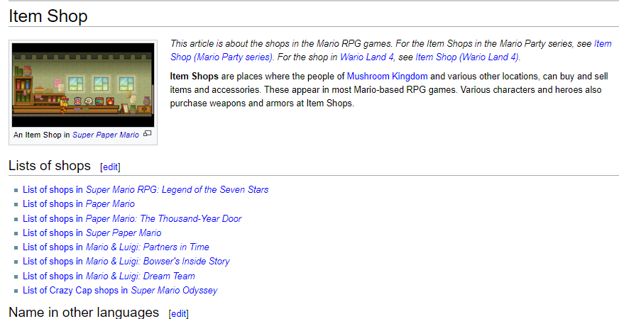
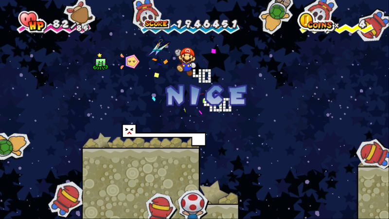
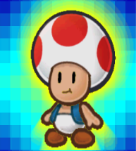

Designed for post SPM games but we'll come back to this anyway.
Paper Mario is one of the RPG offshoots of the Mario franchise, starting with the Nintendo 64 in 2001. It has never been stagnant, each entry introducing new mechanics and building upon old ones, sometimes to much derision from it’s fans. One game controversial from the start, even before Paper Mario: Sticker Star, is Super Paper Mario. This article will discuss reasons I think this platormer RPG hybrid is often unfairly treated in comparison to the games preceding it. I will keep this short and sweet, this is not a rant per say, just an comparative overview so not everything will be completely positive either. Read on.
1. Story and Characters: Part of the appeal of Paper Mario among fans is the not cardboard (no pun intended) and generic characters and stories that involve more than 'Bowser kidnaps Peach'. Bowser and Peach are still around of course, but you will have others OCs involved, stark contrast to the games AFTER SPM where the plot was a typical Mario one. SPM involves an alternate dimension separate from the Mushroom Kingdom with new characters and a villain with ‘complex (by Mario standards) emotions behind what he’s doing and a goon squad with their own quirks. Interestingly, there are expies of returning characters like Merlon, Merlee, etc, a neat bit.
2. Partners! SPM has them at least mechanically and technically... You have twelve in a half unique pixels that can do some of the basic utility functions previous partners had. One can relay info on enemies, reveal objects, one blows up, one makes Mario invulnerable while motionless, and other things are mixed and matched. Slim makes Mario do the same thing that a 'curse' did in TTYD. Tippi can tattle, not because she's a student like Goombario or Goombella, instead she's.. actually ancient and other backstory reasons. She stays outside the party along side other pixels because she has a significant story role. Pixel ‘partners' are not discussed often because, unfortunately, outside of their intro (and with unfitting music at that) they do not speak nor take the story role of previous partners, speaking for Mario. Some of this is justified because Mario isn’t the only protagonist but there could have been more dialogue from them in the game, especially since some efforts is made into giving them all some personality right before they join you. They’re all ancient beings too, so think of the potential that was there! Still SPM gets credit for trying.
3. Hub worlds and chapters: Flipside/Flopside has the 'classic' Paper Mario commonalities with an inn, npcs, areas to explore gradually, shops, and portals to the chapter levels. The levels all have lore behind them, helped out somewhat by the locations being removed from the Mushroom Kingdom. In the worlds there are sometimes towns within the ‘Chapters’, smaller hubs. These have less going on compared to previous games due to the 2-D perspective, but does Sticker Star and Color Splash compare? They do worse even with 3-D on their side. Decalburg from Sticker Star has an item shop, the Sticker Fest stage that you can’t do much with, and the area where you convert things into stickers. Port Prisma offers a little more ostensibly, but it’s still not that much going on. The only residents are the Toads and the size is smaller. Those games have a different structure so it's not completely fair to compare, still the comparison was brought out to prove that SPM is closer to the first the games than the later.
4. The shops, places to make recipes, badges or equivalents.: What would an RPG be without some sort of shop system? There are several in all three of the first games, each selling different things at different costs and different selling/trading costs as well. Initially you cook with one item then you can cook with multiple. Things are mixed up here since there are two cooks, Saffron and Dyllis. Also just like in PM64 and TTYD its... annoying to fill everything out. Yay for tradition! SPM lacks badges, but the Catch Cards in addition of workng as a bestiary, grant extra damage on the enemy. Now to compare Sticker Star and Color Splash however only keep their shop (singular for the most part) arbitrarily.(More on that below.)
What games are missing here?
5. The Pit of 100 trails: SPM actually included this from TTYD, with it’s own spin appropriate for the game play changes. The developers were quite proud of it too, forcing you to play it a little more than you should, but that's another matter. Instead of being locked in a room with a single enemy (as it appears on the field) to defeated before moving, you are dunked into a dungeon with varying amounts of foes. One of them has the key you need and you are timed on the floor. You could find the key with the last of first enemy, it's random and exciting. The harder Flopside version introduces 'dark' enemies who are only outlines so a player can be surprised by an enemy attribute they aren't expecting. My only criticism is that the SPM version doesn't really have a foreboding or dreadful feel the deeper you get, and the boss cannot compare to Bonetail. There is the Sammer challenge with a similar premise but it is repetitive in a different kind of way. Give credit due for more content however. Later games had a prime opportunity for this sort of challenge since their battle systems depended on inventory management, but Sticker Star and Color Splash don’t even try.

Pictured: Two fearsome Pit of 100 Trials enemies!!! Trust me.
6. Unique bosses: The first two games have unique characters as the bosses that are more than just ‘enemy' but bigger. SPM also is like this, but many bosses and mini bosses repeat because they are part of Count Bleck's squad. They are cool, but it can feel lazy and they just aren't challenging. Shadoo is basically black outlines of our four main heroes. There are still standouts like Francis, the Brobot fights, Underchomp who has an entirely different battle scheme and Bonechill. The last I mention because his is far more easy than he looks.
7. Action Commands and game mechanics: The player is greatly encouraged to use to button inputs to increase the effectiveness (or have any effect at all) when executing a move in battle. Super Paper Mario is real time, but items can require these by pressing something or shaking the remote. 'Stylish' moves can be executed after jumping on enemies. Some paper cut out audience members will pop on screen and I don't know why, but they tried I guess.
The audience doesn't make sense here, I mean, where are their helmets??
Moving on, HP and ATTK carry over and increases from points leveling up. That's your 'experience'. Defense doesn't really however.. Mario can flip to 3-D as a kind of selling point, but that's not that exciting really because levels just turn into narrowish corridors that way with few enemies. The count down timer isn't particularly pressing either. Despite this, we can see the attempt to adapt old Paper Mario customs to the new type of game SPM was.
7. Enemies and tattle log system: SPM has an eclectic bunch. Like previous games they have different colored variants with the most elite enemy that's entirely blacked out. The Mario enemies are a bit basic and related directly to Bowser as they have been brainwashed by Bleck (also indicated by the sun glasses on koopas). The native Flopside enemies are hit and miss. I appreciate some being abstract and interesting, but many are silly too.
There is a area SPM does not skimp however, the Paper Mario bestiary. Tippi gives information by tattling but so do Catch Cards that you collect for every enemy and even non-enemies. The catch card entry differs from Tippi's commentary. Collecting all of the cards is a headache, but a worthy achievement, they even throw in characters from previous Paper Mario games. Sticker Star has this feature absent completely, perhaps because enemy’s hp bars are combined. Because of this there is no in game way to know an enemy’s attack, defense, and more. Color Splash has select cards of a few foes but they behave as temporary partners. Overall, those games skip over this feature with only a museum to make up for it.
The only Toad in the game.
0. Music: I didn't know where to place this because my opinion is all over the place regarding Paper Mario's music. I think the series has some hits, especially in the first game which is stronger even than TTYD to me in the music department. SPM is overall okay but I am not moved by a much of it either. Flopside's town music sure drones and gets in your head, but not quite like Rogueport! A few songs annoy me a little however, the theme songs of pixels joining you, the mellow one that plays during an important story part, and a couple of other things. Now if my opinion of SPM music is mostly okay, why didn't I give it a number on the list? Because this is one area where successors Sticker Star and Color Splash actually improve. It is often said that one redeeming factor of those games is their great soundtracks and I'm afraid I have to agree!